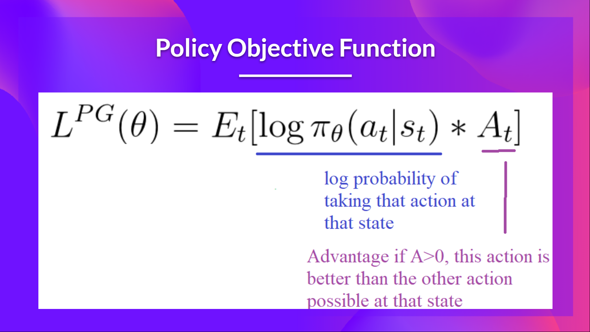
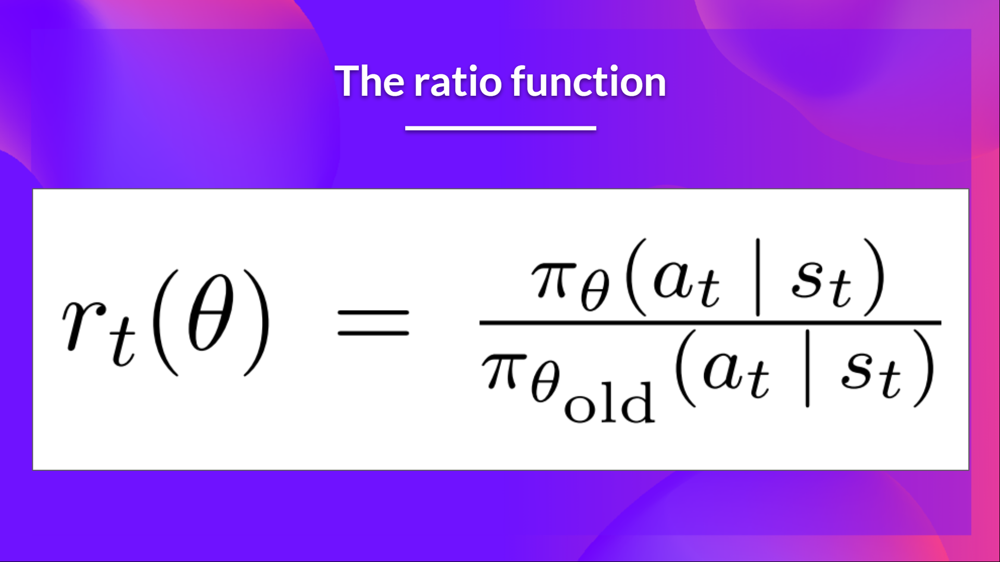
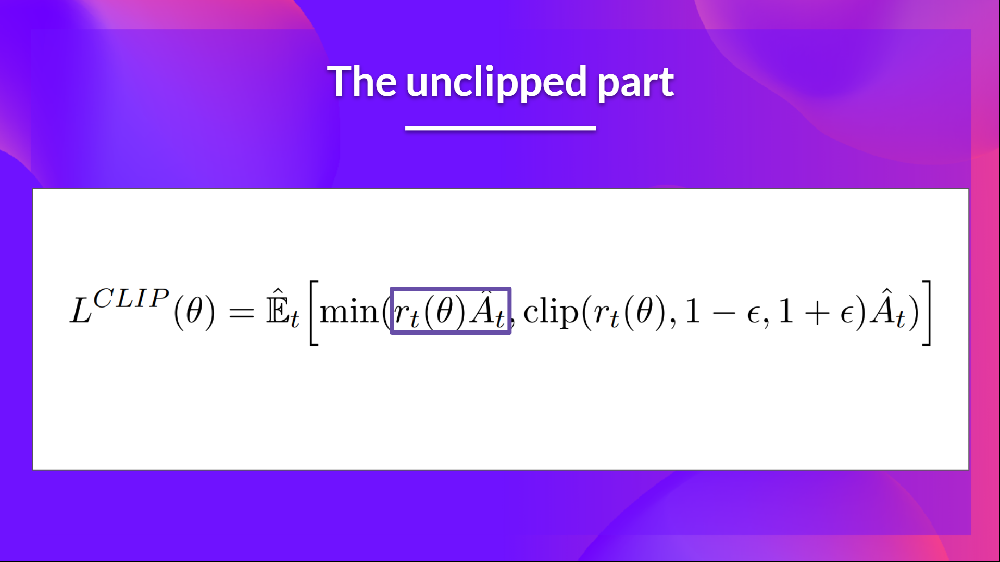

Proximal Policy Optimization#
Note
In the previous section, we learned about Advantage Actor Critic (A2C), a hybrid architecture combining value-based and policy-based methods.
Today we’ll learn about Proximal Policy Optimization (PPO), an architecture that improves our agent’s training stability by avoiding policy updates that are too large. To do that, we use a ratio that indicates the difference between our current and old policy and clip this ratio to a specific range \([1-\epsilon, 1+\epsilon]\)
Introducing the Clipped Surrogate Objective Function#
Recap: The Policy Objective Function#
Let’s remember what the objective is to optimize in Reinforce:

The idea was that by taking a gradient ascent step on this function, we would push our agent to take actions that lead to higher rewards and avoid harmful actions.
However, the problem comes from the step size:
Too small, the training process was too slow
Too high, there was too much variability in the training
With PPO, the idea is to constrain our policy update with a new objective function called the Clipped surrogate objective function that will constrain the policy change in a small range using a clip:

Let’s study each part to understand how it works.
The Ratio Function#
The ratio function is calculated as follows:

As we can see, \(r_{t}(\theta)\) denotes the probability ratio between the current and old policy:
If \(r_{t}(\theta) > 1\), the action \(a_{t}\) and state \(s_{t}\) is more likely in the current policy than the old policy.
If \(r_{t}(\theta) < 1\), the action is less likely for the current policy than for the old one.
So this probability ratio is an easy way to estimate the divergence between old and current policy.
The unclipped part of the Clipped Surrogate Objective function#

This ratio can replace the log probability we use in the policy objective function. This gives us the left part of the new objective function: multiplying the ratio by the advantage.

However, without a constraint, if the action taken is much more probable in our current policy than in our former, this would lead to a significant policy gradient step and, therefore, an excessive policy update.
The clipped Part of the Clipped Surrogate Objective function#
Consequently, we need to constrain this objective function by penalizing changes that lead to a ratio far away from 1.
By clipping the ratio, we ensure that we do not have a too large policy update because the current policy can’t be too different from the older one. To do that, PPO clip probability ratio directly in the objective function with its Clipped surrogate objective function.

With the Clipped Surrogate Objective function, we have two probability ratios, one non-clipped and one clipped in a range between \([1-\epsilon, 1 + \epsilon]\).
Taking the minimum of the clipped and non-clipped objective means we’ll select either the clipped or the non-clipped objective based on the ratio and advantage situation.
PPO-Clip#
PPO-clip updates policies via
typically taking multiple steps of (usually minibatch) SGD to maximize the objective. Here \(L\) is given by
in which \(\epsilon\) is a (small) hyperparameter which roughly says how far away the new policy is allowed to go from the old.
What we have seen so far is that clipping serves as a regularizer by removing incentives for the policy to change dramatically, and the hyperparameter \(\epsilon\) corresponds to how far away the new policy can go from the old while still profiting the objective.
PPO-Penalty#
Another approach, which can be used as an alternative to the clipped surrogate objective, or in addition to it, is to use a penalty on KL divergence, and to adapt the penalty coefficient so that we achieve some target value of the KL divergence \(d_{\text{targ}}\) each policy update.
In the simplest instantiation of this algorithm, we perform the following steps in each policy update:
Using several epochs of minibatch SGD, optimize the KL-penalized objective
Compute \(d=\hat{\mathbb{E}}_{t}\left[\text{KL}\left[\pi_{\theta_{\text{old}}}(\cdot|s_{t}), \pi_{\theta}(\cdot|s_{t})\right]\right]\)
If \(d<d_{\text{targ}}/1.5,\beta\gets\beta/2\)
If \(d>d_{\text{targ}}\times 1.5,\beta\gets\beta\times 2\)
The updated \(\beta\) is used for the next policy update.
Tip
The Kullback–Leibler (KL) divergence between \(P\) and \(Q\) is:
It is a way to measure if two distributions are close together or not (the smaller the closer).